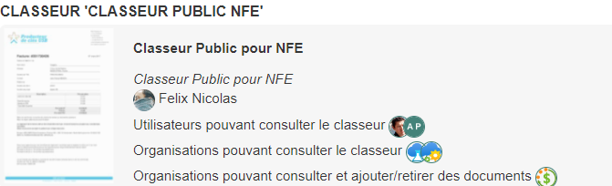

Arcade GED 8.1, nouveautés
Ordre du jour
Introduction
(4) Principales nouveautés
Mais il y en a d’autres

Conclusion
Objectifs de cette version
Remerciements
Merci à tous 
Et plus particulièrement :
à la team produit : EAR, PRO
aux différents contributeurs techniques : MRA, JMU
aux différents participants indirects : JDE, PJO, LGU, MJC, OKA, ALA
désolé pour ceux que j’ai oubliés !
Déroulé
Dossier devient
Arcade GED login
Arcade GED accueil
Arcade GED résultats
Arcade GED fiche
Classeurs
Information | Cette fonctionnalité est inspirée de la notion de projet sous Courrier |
Elle permet :
de classer des documents de différents types de contenu dans un même
dossierde partager ses documents avec différentes personnes et services
en consultation seulement
ou en mode collaboratif

Classeurs
Accueil

Création

Consultation
Ajout d’un document
Reconciliation de documents
Edition en ligne
Autres réalisations
Mot de passe oublié
Suggestion automatique sur les champs liés à un contenu parent
Filtre dans la vue arborescente
Evolutions mineures
Evolutions invisibles
Matrice de compatibilité
À suivre (cette version)
À suivre (prochaine version)
On compte sur vous
Important | Comme indiqué, cette version ne passe pas entre les mains de la cellule ITQ, |
N’hésitez pas à créer un {ticket} dans `Redmine`.
Notifiez SRO pour toute question/demande de récupération des logs, …
Attention | Vous ne recevrez aucune réponse de ma part via teams, à bons entendeurs |